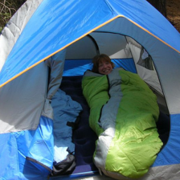
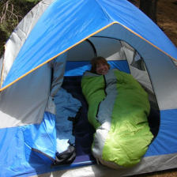
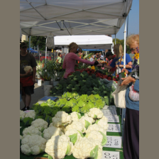
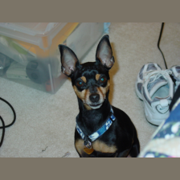
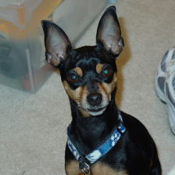
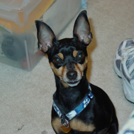
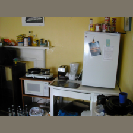
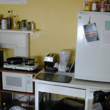
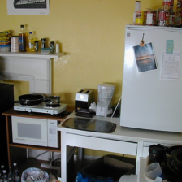
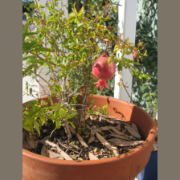

val_0014 · 验证集
A：帐篷 / B：睡袋
类别：mountain tent / sleeping bag
原数据集标签：sleeping bag
ResNet-18 · 两种未同时通过ResNet-50 · 两种未同时通过
展开遮挡、裁剪与分类分数
ResNet-18
均值：通过；模糊：未通过。裁剪类别排名 A=1，B=1。
裁剪框包含另一目标标注像素：A=是，B=是。背景对照位置数 A=0，B=0。
| 输入 | A：帐篷 分数 | B：睡袋 分数 |
|---|
| 整图 | 23.845 | 18.894 |
| 均值遮挡 A | 15.014 | 13.047 |
| 均值遮挡 B | 20.378 | 12.634 |
| 模糊遮挡 A | 16.713 | 10.530 |
| 模糊遮挡 B | 21.422 | 13.323 |
| 单独裁剪 A | 23.828 | 18.917 |
| 单独裁剪 B | 6.610 | 18.068 |
ResNet-50
均值：未通过；模糊：通过。裁剪类别排名 A=1，B=1。
裁剪框包含另一目标标注像素：A=是，B=是。背景对照位置数 A=0，B=0。
| 输入 | A：帐篷 分数 | B：睡袋 分数 |
|---|
| 整图 | 6.071 | 4.625 |
| 均值遮挡 A | 6.089 | 5.902 |
| 均值遮挡 B | 6.430 | 3.067 |
| 模糊遮挡 A | 5.952 | 6.459 |
| 模糊遮挡 B | 6.293 | 1.617 |
| 单独裁剪 A | 5.855 | 4.408 |
| 单独裁剪 B | 2.511 | 6.995 |
官方中心裁剪对照

ResNet-18：A 保留 65.9%，B 保留 100.0%；两种遮挡未同时通过。未纳入保留率≥90%的汇总。
ResNet-50：A 保留 78.2%，B 保留 100.0%；两种遮挡都通过。未纳入保留率≥90%的汇总。val_0034 · 验证集
A：木吉他 / B：手风琴
类别：acoustic guitar / accordion
原数据集标签：accordion
ResNet-18 · 两种未同时通过ResNet-50 · 两种都通过
展开遮挡、裁剪与分类分数
ResNet-18
均值：未通过；模糊：未通过。裁剪类别排名 A=1，B=1。
裁剪框包含另一目标标注像素：A=否，B=否。背景对照位置数 A=0，B=0。
| 输入 | A：木吉他 分数 | B：手风琴 分数 |
|---|
| 整图 | 7.204 | 12.740 |
| 均值遮挡 A | 5.820 | 12.499 |
| 均值遮挡 B | 4.414 | 4.783 |
| 模糊遮挡 A | 4.952 | 11.651 |
| 模糊遮挡 B | 3.562 | 4.069 |
| 单独裁剪 A | 14.538 | 4.439 |
| 单独裁剪 B | 3.134 | 22.059 |
ResNet-50
均值：通过；模糊：通过。裁剪类别排名 A=1，B=1。
裁剪框包含另一目标标注像素：A=否，B=否。背景对照位置数 A=0，B=0。
| 输入 | A：木吉他 分数 | B：手风琴 分数 |
|---|
| 整图 | 3.521 | 6.199 |
| 均值遮挡 A | 0.706 | 6.283 |
| 均值遮挡 B | 5.377 | 4.853 |
| 模糊遮挡 A | 1.037 | 6.059 |
| 模糊遮挡 B | 5.095 | 3.453 |
| 单独裁剪 A | 6.813 | 2.796 |
| 单独裁剪 B | 0.650 | 7.231 |
官方中心裁剪对照
ResNet-18：A 保留 74.8%，B 保留 91.4%；两种遮挡都通过。未纳入保留率≥90%的汇总。ResNet-50：A 保留 87.8%，B 保留 100.0%；两种遮挡都通过。未纳入保留率≥90%的汇总。
val_0060 · 验证集
A：花椰菜 / B：西兰花
类别：cauliflower / broccoli
原数据集标签：broccoli

ResNet-18 · 两种都通过ResNet-50 · 两种未同时通过
展开遮挡、裁剪与分类分数
ResNet-18
均值：通过；模糊：通过。裁剪类别排名 A=1，B=2。
裁剪框包含另一目标标注像素：A=是，B=是。背景对照位置数 A=0，B=0。
| 输入 | A：花椰菜 分数 | B：西兰花 分数 |
|---|
| 整图 | 13.779 | 8.942 |
| 均值遮挡 A | 8.438 | 7.668 |
| 均值遮挡 B | 9.400 | 5.566 |
| 模糊遮挡 A | 8.334 | 7.383 |
| 模糊遮挡 B | 9.477 | 5.509 |
| 单独裁剪 A | 24.875 | 14.818 |
| 单独裁剪 B | 11.981 | 11.976 |
ResNet-50
均值：未通过；模糊：未通过。裁剪类别排名 A=1，B=2。
裁剪框包含另一目标标注像素：A=是，B=是。背景对照位置数 A=0，B=0。
| 输入 | A：花椰菜 分数 | B：西兰花 分数 |
|---|
| 整图 | 6.337 | 1.060 |
| 均值遮挡 A | 6.320 | 1.787 |
| 均值遮挡 B | 6.179 | 1.269 |
| 模糊遮挡 A | 3.245 | 0.617 |
| 模糊遮挡 B | 6.239 | 1.998 |
| 单独裁剪 A | 6.303 | 1.034 |
| 单独裁剪 B | 7.203 | 2.681 |
官方中心裁剪对照
ResNet-18：A 保留 36.3%，B 保留 100.0%；两种遮挡未同时通过。未纳入保留率≥90%的汇总。ResNet-50：A 保留 50.3%，B 保留 100.0%；两种遮挡未同时通过。未纳入保留率≥90%的汇总。
val_0092 · 验证集
A：迷你杜宾犬 / B：运动鞋
类别：miniature pinscher / running shoe
原数据集标签：miniature pinscher

ResNet-18 · 两种都通过ResNet-50 · 两种都通过
展开遮挡、裁剪与分类分数
ResNet-18
均值：通过；模糊：通过。裁剪类别排名 A=1，B=1。
裁剪框包含另一目标标注像素：A=是，B=否。背景对照位置数 A=0，B=10。
| 输入 | A：迷你杜宾犬 分数 | B：运动鞋 分数 |
|---|
| 整图 | 13.938 | 3.565 |
| 均值遮挡 A | 2.613 | 8.455 |
| 均值遮挡 B | 14.154 | 0.663 |
| 模糊遮挡 A | 1.776 | 7.992 |
| 模糊遮挡 B | 13.858 | 0.396 |
| 单独裁剪 A | 18.915 | 0.920 |
| 单独裁剪 B | 0.517 | 9.154 |
ResNet-50
均值：通过；模糊：通过。裁剪类别排名 A=1，B=1。
裁剪框包含另一目标标注像素：A=是，B=否。背景对照位置数 A=0，B=10。
| 输入 | A：迷你杜宾犬 分数 | B：运动鞋 分数 |
|---|
| 整图 | 6.495 | 1.130 |
| 均值遮挡 A | 1.989 | 4.898 |
| 均值遮挡 B | 6.478 | 0.262 |
| 模糊遮挡 A | 1.867 | 3.527 |
| 模糊遮挡 B | 6.488 | 0.275 |
| 单独裁剪 A | 6.240 | -0.017 |
| 单独裁剪 B | 0.657 | 7.425 |
官方中心裁剪对照

ResNet-18：A 保留 89.8%，B 保留 21.4%；两种遮挡都通过。未纳入保留率≥90%的汇总。
ResNet-50：A 保留 97.2%，B 保留 38.4%；两种遮挡都通过。未纳入保留率≥90%的汇总。val_0098 · 验证集
A：啤酒瓶类容器 / B：啤酒杯
类别：beer bottle / beer glass
原数据集标签：beer glass
ResNet-18 · 两种未同时通过ResNet-50 · 两种都通过
展开遮挡、裁剪与分类分数
ResNet-18
均值：通过；模糊：未通过。裁剪类别排名 A=1，B=1。
裁剪框包含另一目标标注像素：A=是，B=是。背景对照位置数 A=10，B=0。
| 输入 | A：啤酒瓶类容器 分数 | B：啤酒杯 分数 |
|---|
| 整图 | 13.873 | 12.469 |
| 均值遮挡 A | 8.226 | 11.674 |
| 均值遮挡 B | 14.647 | 10.407 |
| 模糊遮挡 A | 8.590 | 12.126 |
| 模糊遮挡 B | 15.625 | 12.152 |
| 单独裁剪 A | 18.733 | 11.949 |
| 单独裁剪 B | 10.492 | 14.861 |
ResNet-50
均值：通过；模糊：通过。裁剪类别排名 A=1，B=1。
裁剪框包含另一目标标注像素：A=是，B=是。背景对照位置数 A=10，B=0。
| 输入 | A：啤酒瓶类容器 分数 | B：啤酒杯 分数 |
|---|
| 整图 | 6.053 | 6.175 |
| 均值遮挡 A | 4.911 | 6.078 |
| 均值遮挡 B | 6.296 | 5.044 |
| 模糊遮挡 A | 5.317 | 6.487 |
| 模糊遮挡 B | 6.275 | 5.016 |
| 单独裁剪 A | 6.117 | 4.473 |
| 单独裁剪 B | 3.925 | 7.136 |
官方中心裁剪对照
ResNet-18：A 保留 80.0%，B 保留 88.9%；两种遮挡都通过。未纳入保留率≥90%的汇总。ResNet-50：A 保留 87.3%，B 保留 91.9%；两种遮挡未同时通过。未纳入保留率≥90%的汇总。
val_0141 · 验证集
A：摇椅 / B：牛仔靴
类别：rocking chair / cowboy boot
原数据集标签：cowboy boot
ResNet-18 · 两种未同时通过ResNet-50 · 两种未同时通过
展开遮挡、裁剪与分类分数
ResNet-18
均值：未通过；模糊：通过。裁剪类别排名 A=239，B=1。
裁剪框包含另一目标标注像素：A=是，B=是。背景对照位置数 A=0，B=10。
| 输入 | A：摇椅 分数 | B：牛仔靴 分数 |
|---|
| 整图 | 5.755 | 4.602 |
| 均值遮挡 A | 6.287 | 5.444 |
| 均值遮挡 B | 5.648 | 4.304 |
| 模糊遮挡 A | 4.913 | 5.887 |
| 模糊遮挡 B | 5.686 | 4.547 |
| 单独裁剪 A | 1.612 | 4.540 |
| 单独裁剪 B | 0.955 | 9.697 |
ResNet-50
均值：未通过；模糊：通过。裁剪类别排名 A=204，B=1。
裁剪框包含另一目标标注像素：A=是，B=是。背景对照位置数 A=0，B=10。
| 输入 | A：摇椅 分数 | B：牛仔靴 分数 |
|---|
| 整图 | 2.999 | 3.759 |
| 均值遮挡 A | 2.517 | 4.586 |
| 均值遮挡 B | 2.035 | 3.124 |
| 模糊遮挡 A | 1.516 | 4.297 |
| 模糊遮挡 B | 1.726 | 2.447 |
| 单独裁剪 A | 0.302 | 2.405 |
| 单独裁剪 B | 0.425 | 4.618 |
官方中心裁剪对照
ResNet-18：A 保留 91.9%，B 保留 99.5%；两种遮挡都通过。纳入保留率≥90%的汇总。ResNet-50：A 保留 99.5%，B 保留 100.0%；两种遮挡都通过。纳入保留率≥90%的汇总。
val_0149 · 验证集
A：冰箱 / B：微波炉
类别：refrigerator / microwave
原数据集标签：microwave

ResNet-18 · 两种未同时通过ResNet-50 · 两种都通过
展开遮挡、裁剪与分类分数
ResNet-18
均值：未通过；模糊：未通过。裁剪类别排名 A=2，B=1。
裁剪框包含另一目标标注像素：A=否，B=否。背景对照位置数 A=0，B=10。
| 输入 | A：冰箱 分数 | B：微波炉 分数 |
|---|
| 整图 | 8.511 | 8.285 |
| 均值遮挡 A | 8.032 | 7.679 |
| 均值遮挡 B | 8.290 | 8.018 |
| 模糊遮挡 A | 6.929 | 6.859 |
| 模糊遮挡 B | 8.247 | 7.651 |
| 单独裁剪 A | 12.089 | 7.727 |
| 单独裁剪 B | 3.303 | 16.864 |
ResNet-50
均值：通过；模糊：通过。裁剪类别排名 A=1，B=1。
裁剪框包含另一目标标注像素：A=否，B=否。背景对照位置数 A=0，B=10。
| 输入 | A：冰箱 分数 | B：微波炉 分数 |
|---|
| 整图 | 5.282 | 6.605 |
| 均值遮挡 A | 4.287 | 6.580 |
| 均值遮挡 B | 5.370 | 6.142 |
| 模糊遮挡 A | 4.978 | 6.265 |
| 模糊遮挡 B | 5.391 | 6.223 |
| 单独裁剪 A | 7.180 | 4.061 |
| 单独裁剪 B | 0.192 | 6.489 |
官方中心裁剪对照

ResNet-18：A 保留 78.8%，B 保留 100.0%；两种遮挡未同时通过。未纳入保留率≥90%的汇总。
ResNet-50：A 保留 93.6%，B 保留 100.0%；两种遮挡都通过。纳入保留率≥90%的汇总。val_0168 · 验证集
A：咖啡杯 / B：键盘
类别：coffee mug / computer keyboard
原数据集标签：coffee mug
ResNet-18 · 两种都通过ResNet-50 · 两种都通过
展开遮挡、裁剪与分类分数
ResNet-18
均值：通过；模糊：通过。裁剪类别排名 A=1，B=2。
裁剪框包含另一目标标注像素：A=是，B=是。背景对照位置数 A=0，B=0。
| 输入 | A：咖啡杯 分数 | B：键盘 分数 |
|---|
| 整图 | 14.514 | 6.139 |
| 均值遮挡 A | 3.701 | 8.443 |
| 均值遮挡 B | 14.702 | 5.015 |
| 模糊遮挡 A | 4.335 | 9.818 |
| 模糊遮挡 B | 15.122 | 4.457 |
| 单独裁剪 A | 18.954 | 1.601 |
| 单独裁剪 B | 1.784 | 7.269 |
ResNet-50
均值：通过；模糊：通过。裁剪类别排名 A=1，B=2。
裁剪框包含另一目标标注像素：A=是，B=是。背景对照位置数 A=0，B=0。
| 输入 | A：咖啡杯 分数 | B：键盘 分数 |
|---|
| 整图 | 5.567 | 3.550 |
| 均值遮挡 A | 4.938 | 5.509 |
| 均值遮挡 B | 6.149 | 1.835 |
| 模糊遮挡 A | 3.914 | 5.299 |
| 模糊遮挡 B | 5.859 | 0.799 |
| 单独裁剪 A | 6.504 | 1.107 |
| 单独裁剪 B | 2.557 | 7.004 |
官方中心裁剪对照
ResNet-18：A 保留 97.9%，B 保留 66.8%；两种遮挡都通过。未纳入保留率≥90%的汇总。ResNet-50：A 保留 100.0%，B 保留 76.8%；两种遮挡都通过。未纳入保留率≥90%的汇总。
val_0175 · 验证集
A：花盆 / B：石榴
类别：pot / pomegranate
原数据集标签：pomegranate

ResNet-18 · 两种未同时通过ResNet-50 · 两种未同时通过
展开遮挡、裁剪与分类分数
ResNet-18
均值：未通过；模糊：未通过。裁剪类别排名 A=1，B=1。
裁剪框包含另一目标标注像素：A=否，B=否。背景对照位置数 A=0，B=0。
| 输入 | A：花盆 分数 | B：石榴 分数 |
|---|
| 整图 | 11.948 | 7.354 |
| 均值遮挡 A | 5.340 | 4.389 |
| 均值遮挡 B | 14.366 | 6.015 |
| 模糊遮挡 A | 7.224 | 4.694 |
| 模糊遮挡 B | 15.308 | 5.902 |
| 单独裁剪 A | 12.477 | 3.886 |
| 单独裁剪 B | 3.505 | 12.132 |
ResNet-50
均值：未通过；模糊：未通过。裁剪类别排名 A=1，B=1。
裁剪框包含另一目标标注像素：A=否，B=否。背景对照位置数 A=0，B=0。
| 输入 | A：花盆 分数 | B：石榴 分数 |
|---|
| 整图 | 6.311 | 3.419 |
| 均值遮挡 A | 6.715 | 5.901 |
| 均值遮挡 B | 6.342 | 1.706 |
| 模糊遮挡 A | 7.058 | 6.194 |
| 模糊遮挡 B | 6.322 | 1.904 |
| 单独裁剪 A | 6.403 | 0.083 |
| 单独裁剪 B | 0.725 | 7.391 |
官方中心裁剪对照
ResNet-18：A 保留 47.9%，B 保留 100.0%；两种遮挡都通过。未纳入保留率≥90%的汇总。ResNet-50：A 保留 60.7%，B 保留 100.0%；两种遮挡都通过。未纳入保留率≥90%的汇总。
val_0205 · 验证集
A：草莓 / B：香蕉
类别：strawberry / banana
原数据集标签：strawberry
ResNet-18 · 两种都通过ResNet-50 · 两种都通过
展开遮挡、裁剪与分类分数
均值遮挡 A均值遮挡 B模糊遮挡 A模糊遮挡 B单独裁剪 A单独裁剪 B ResNet-18
均值：通过；模糊：通过。裁剪类别排名 A=1，B=1。
裁剪框包含另一目标标注像素：A=是，B=是。背景对照位置数 A=0，B=0。
| 输入 | A：草莓 分数 | B：香蕉 分数 |
|---|
| 整图 | 7.163 | 8.600 |
| 均值遮挡 A | 0.786 | 6.601 |
| 均值遮挡 B | 8.391 | 6.257 |
| 模糊遮挡 A | 1.790 | 7.369 |
| 模糊遮挡 B | 7.412 | 6.977 |
| 单独裁剪 A | 10.387 | 9.625 |
| 单独裁剪 B | 6.343 | 11.658 |
ResNet-50
均值：通过；模糊：通过。裁剪类别排名 A=2，B=1。
裁剪框包含另一目标标注像素：A=是，B=是。背景对照位置数 A=0，B=0。
| 输入 | A：草莓 分数 | B：香蕉 分数 |
|---|
| 整图 | 4.301 | 5.562 |
| 均值遮挡 A | 1.233 | 4.751 |
| 均值遮挡 B | 5.632 | 3.623 |
| 模糊遮挡 A | 1.594 | 4.143 |
| 模糊遮挡 B | 5.652 | 3.074 |
| 单独裁剪 A | 5.489 | 5.707 |
| 单独裁剪 B | 2.411 | 6.430 |
官方中心裁剪对照
ResNet-18：A 保留 97.2%，B 保留 55.6%；两种遮挡未同时通过。未纳入保留率≥90%的汇总。ResNet-50：A 保留 99.6%，B 保留 69.2%；两种遮挡都通过。未纳入保留率≥90%的汇总。
val_0231 · 验证集
A：背包 / B：鼬
类别：backpack / weasel
原数据集标签：weasel
ResNet-18 · 两种都通过ResNet-50 · 两种都通过
展开遮挡、裁剪与分类分数
均值遮挡 A均值遮挡 B模糊遮挡 A模糊遮挡 B单独裁剪 A单独裁剪 B ResNet-18
均值：通过；模糊：通过。裁剪类别排名 A=10，B=3。
裁剪框包含另一目标标注像素：A=是，B=是。背景对照位置数 A=0，B=10。
| 输入 | A：背包 分数 | B：鼬 分数 |
|---|
| 整图 | 6.156 | 9.011 |
| 均值遮挡 A | -1.170 | 10.431 |
| 均值遮挡 B | 8.816 | 0.760 |
| 模糊遮挡 A | -2.101 | 10.184 |
| 模糊遮挡 B | 8.478 | 1.769 |
| 单独裁剪 A | 6.621 | 7.040 |
| 单独裁剪 B | -0.302 | 17.994 |
ResNet-50
均值：通过；模糊：通过。裁剪类别排名 A=4，B=3。
裁剪框包含另一目标标注像素：A=是，B=是。背景对照位置数 A=0，B=10。
| 输入 | A：背包 分数 | B：鼬 分数 |
|---|
| 整图 | 1.516 | 5.753 |
| 均值遮挡 A | 0.649 | 5.868 |
| 均值遮挡 B | 6.086 | -0.117 |
| 模糊遮挡 A | -0.242 | 5.443 |
| 模糊遮挡 B | 6.508 | 0.071 |
| 单独裁剪 A | 3.121 | 5.485 |
| 单独裁剪 B | 0.524 | 4.832 |
官方中心裁剪对照
ResNet-18：A 保留 77.1%，B 保留 100.0%；两种遮挡都通过。未纳入保留率≥90%的汇总。ResNet-50：A 保留 89.7%，B 保留 100.0%；两种遮挡都通过。未纳入保留率≥90%的汇总。
val_0244 · 验证集
A：睡袋 / B：折叠椅
类别：sleeping bag / folding chair
原数据集标签：sleeping bag
ResNet-18 · 两种都通过ResNet-50 · 两种都通过
展开遮挡、裁剪与分类分数
均值遮挡 A均值遮挡 B模糊遮挡 A模糊遮挡 B单独裁剪 A单独裁剪 B ResNet-18
均值：通过；模糊：通过。裁剪类别排名 A=7，B=22。
裁剪框包含另一目标标注像素：A=是，B=是。背景对照位置数 A=0，B=0。
| 输入 | A：睡袋 分数 | B：折叠椅 分数 |
|---|
| 整图 | 4.406 | 5.369 |
| 均值遮挡 A | 3.573 | 4.520 |
| 均值遮挡 B | 3.755 | 4.355 |
| 模糊遮挡 A | 3.180 | 4.446 |
| 模糊遮挡 B | 3.965 | 3.908 |
| 单独裁剪 A | 6.087 | 3.923 |
| 单独裁剪 B | 2.650 | 5.381 |
ResNet-50
均值：通过；模糊：通过。裁剪类别排名 A=1，B=22。
裁剪框包含另一目标标注像素：A=是，B=是。背景对照位置数 A=0，B=0。
| 输入 | A：睡袋 分数 | B：折叠椅 分数 |
|---|
| 整图 | 2.784 | 4.280 |
| 均值遮挡 A | 0.476 | 3.887 |
| 均值遮挡 B | 2.730 | 3.617 |
| 模糊遮挡 A | -0.239 | 2.842 |
| 模糊遮挡 B | 2.653 | 2.771 |
| 单独裁剪 A | 5.767 | 0.899 |
| 单独裁剪 B | 2.888 | 2.075 |
官方中心裁剪对照
ResNet-18：A 保留 72.5%，B 保留 72.7%；两种遮挡未同时通过。未纳入保留率≥90%的汇总。ResNet-50：A 保留 82.1%，B 保留 84.5%；两种遮挡都通过。未纳入保留率≥90%的汇总。
val_0245 · 验证集
A：显示器 / B：笔记本电脑
类别：monitor / notebook
原数据集标签：desktop computer
ResNet-18 · 两种都通过ResNet-50 · 两种都通过
展开遮挡、裁剪与分类分数
均值遮挡 A均值遮挡 B模糊遮挡 A模糊遮挡 B单独裁剪 A单独裁剪 B ResNet-18
均值：通过；模糊：通过。裁剪类别排名 A=1，B=1。
裁剪框包含另一目标标注像素：A=否，B=是。背景对照位置数 A=0，B=10。
| 输入 | A：显示器 分数 | B：笔记本电脑 分数 |
|---|
| 整图 | 16.221 | 15.050 |
| 均值遮挡 A | 14.100 | 16.192 |
| 均值遮挡 B | 15.374 | 14.609 |
| 模糊遮挡 A | 14.426 | 15.357 |
| 模糊遮挡 B | 15.678 | 14.833 |
| 单独裁剪 A | 22.754 | 16.521 |
| 单独裁剪 B | 11.310 | 14.298 |
ResNet-50
均值：通过；模糊：通过。裁剪类别排名 A=1，B=2。
裁剪框包含另一目标标注像素：A=否，B=是。背景对照位置数 A=0，B=10。
| 输入 | A：显示器 分数 | B：笔记本电脑 分数 |
|---|
| 整图 | 5.363 | 4.716 |
| 均值遮挡 A | 4.666 | 4.924 |
| 均值遮挡 B | 5.247 | 4.158 |
| 模糊遮挡 A | 5.220 | 4.974 |
| 模糊遮挡 B | 5.430 | 4.561 |
| 单独裁剪 A | 6.300 | 4.787 |
| 单独裁剪 B | 2.174 | 5.179 |
官方中心裁剪对照
ResNet-18：A 保留 100.0%，B 保留 41.8%；两种遮挡未同时通过。未纳入保留率≥90%的汇总。ResNet-50：A 保留 100.0%，B 保留 57.1%；两种遮挡都通过。未纳入保留率≥90%的汇总。
val_0257 · 验证集
A：牛 / B：牛车
类别：ox / oxcart
原数据集标签：oxcart
ResNet-18 · 两种未同时通过ResNet-50 · 两种都通过
展开遮挡、裁剪与分类分数
均值遮挡 A均值遮挡 B模糊遮挡 A模糊遮挡 B单独裁剪 A单独裁剪 B ResNet-18
均值：未通过；模糊：未通过。裁剪类别排名 A=1，B=1。
裁剪框包含另一目标标注像素：A=是，B=是。背景对照位置数 A=10，B=10。
| 输入 | A：牛 分数 | B：牛车 分数 |
|---|
| 整图 | 12.566 | 12.439 |
| 均值遮挡 A | 7.974 | 8.503 |
| 均值遮挡 B | 11.493 | 11.302 |
| 模糊遮挡 A | 7.851 | 7.477 |
| 模糊遮挡 B | 10.827 | 10.375 |
| 单独裁剪 A | 20.240 | 20.231 |
| 单独裁剪 B | 16.504 | 17.481 |
ResNet-50
均值：通过；模糊：通过。裁剪类别排名 A=2，B=2。
裁剪框包含另一目标标注像素：A=是，B=是。背景对照位置数 A=10，B=10。
| 输入 | A：牛 分数 | B：牛车 分数 |
|---|
| 整图 | 5.583 | 5.954 |
| 均值遮挡 A | 4.829 | 5.300 |
| 均值遮挡 B | 5.331 | 5.196 |
| 模糊遮挡 A | 5.048 | 5.242 |
| 模糊遮挡 B | 5.209 | 5.139 |
| 单独裁剪 A | 5.396 | 5.976 |
| 单独裁剪 B | 6.568 | 5.533 |
官方中心裁剪对照
ResNet-18：A 保留 100.0%，B 保留 100.0%；两种遮挡未同时通过。纳入保留率≥90%的汇总。ResNet-50：A 保留 100.0%，B 保留 100.0%；两种遮挡未同时通过。纳入保留率≥90%的汇总。
val_0277 · 验证集
A：电吉他 / B：短号
类别：electric guitar / cornet
原数据集标签：cornet
ResNet-18 · 两种未同时通过ResNet-50 · 两种未同时通过
展开遮挡、裁剪与分类分数
均值遮挡 A均值遮挡 B模糊遮挡 A模糊遮挡 B单独裁剪 A单独裁剪 B ResNet-18
均值：未通过；模糊：未通过。裁剪类别排名 A=6，B=4。
裁剪框包含另一目标标注像素：A=是，B=是。背景对照位置数 A=0，B=10。
| 输入 | A：电吉他 分数 | B：短号 分数 |
|---|
| 整图 | 5.512 | 5.422 |
| 均值遮挡 A | 8.182 | 9.083 |
| 均值遮挡 B | 6.132 | 5.606 |
| 模糊遮挡 A | 6.344 | 8.695 |
| 模糊遮挡 B | 5.975 | 5.672 |
| 单独裁剪 A | 9.525 | 11.222 |
| 单独裁剪 B | 3.446 | 10.444 |
ResNet-50
均值：未通过；模糊：通过。裁剪类别排名 A=20，B=2。
裁剪框包含另一目标标注像素：A=是，B=是。背景对照位置数 A=0，B=10。
| 输入 | A：电吉他 分数 | B：短号 分数 |
|---|
| 整图 | 3.804 | 2.111 |
| 均值遮挡 A | 3.663 | 1.515 |
| 均值遮挡 B | 3.914 | 1.834 |
| 模糊遮挡 A | 2.922 | 2.445 |
| 模糊遮挡 B | 3.963 | 1.582 |
| 单独裁剪 A | 1.698 | 5.435 |
| 单独裁剪 B | 0.407 | 5.693 |
官方中心裁剪对照
ResNet-18：A 保留 95.6%，B 保留 100.0%；两种遮挡未同时通过。纳入保留率≥90%的汇总。ResNet-50：A 保留 100.0%，B 保留 100.0%；两种遮挡未同时通过。纳入保留率≥90%的汇总。
val_0291 · 验证集
A：四柱床 / B：抽屉柜
类别：four-poster / chest
原数据集标签：four-poster
ResNet-18 · 两种都通过ResNet-50 · 两种都通过
展开遮挡、裁剪与分类分数
均值遮挡 A均值遮挡 B模糊遮挡 A模糊遮挡 B单独裁剪 A单独裁剪 B ResNet-18
均值：通过；模糊：通过。裁剪类别排名 A=1，B=4。
裁剪框包含另一目标标注像素：A=是，B=是。背景对照位置数 A=0，B=0。
| 输入 | A：四柱床 分数 | B：抽屉柜 分数 |
|---|
| 整图 | 12.314 | 4.961 |
| 均值遮挡 A | 6.309 | 6.840 |
| 均值遮挡 B | 12.073 | 4.458 |
| 模糊遮挡 A | 5.085 | 4.723 |
| 模糊遮挡 B | 11.956 | 4.459 |
| 单独裁剪 A | 18.330 | 3.328 |
| 单独裁剪 B | 4.139 | 10.397 |
ResNet-50
均值：通过；模糊：通过。裁剪类别排名 A=1，B=5。
裁剪框包含另一目标标注像素：A=是，B=是。背景对照位置数 A=0，B=0。
| 输入 | A：四柱床 分数 | B：抽屉柜 分数 |
|---|
| 整图 | 6.914 | 1.118 |
| 均值遮挡 A | 6.753 | 3.816 |
| 均值遮挡 B | 6.769 | 0.389 |
| 模糊遮挡 A | 4.551 | 2.356 |
| 模糊遮挡 B | 6.822 | 0.489 |
| 单独裁剪 A | 6.870 | -0.162 |
| 单独裁剪 B | 0.152 | 1.417 |
官方中心裁剪对照
ResNet-18：A 保留 80.9%，B 保留 20.4%；两种遮挡都通过。未纳入保留率≥90%的汇总。ResNet-50：A 保留 85.8%，B 保留 36.4%；两种遮挡未同时通过。未纳入保留率≥90%的汇总。
val_0330 · 验证集
A：风衣 / B：沙发
类别：trench coat / studio couch
原数据集标签：trench coat
ResNet-18 · 两种未同时通过ResNet-50 · 两种都通过
展开遮挡、裁剪与分类分数
均值遮挡 A均值遮挡 B模糊遮挡 A模糊遮挡 B单独裁剪 A单独裁剪 B ResNet-18
均值：通过；模糊：未通过。裁剪类别排名 A=10，B=2。
裁剪框包含另一目标标注像素：A=是，B=是。背景对照位置数 A=0，B=0。
| 输入 | A：风衣 分数 | B：沙发 分数 |
|---|
| 整图 | 10.269 | 4.330 |
| 均值遮挡 A | 9.197 | 3.658 |
| 均值遮挡 B | 10.108 | 3.113 |
| 模糊遮挡 A | 7.569 | 3.034 |
| 模糊遮挡 B | 9.724 | 3.194 |
| 单独裁剪 A | 6.901 | 0.880 |
| 单独裁剪 B | 1.904 | 8.966 |
ResNet-50
均值：通过；模糊：通过。裁剪类别排名 A=1，B=2。
裁剪框包含另一目标标注像素：A=是，B=是。背景对照位置数 A=0，B=0。
| 输入 | A：风衣 分数 | B：沙发 分数 |
|---|
| 整图 | 5.539 | 2.000 |
| 均值遮挡 A | 4.040 | 2.868 |
| 均值遮挡 B | 4.889 | 0.487 |
| 模糊遮挡 A | 3.489 | 2.566 |
| 模糊遮挡 B | 4.856 | 0.223 |
| 单独裁剪 A | 5.072 | -0.723 |
| 单独裁剪 B | 2.643 | 3.562 |
官方中心裁剪对照
ResNet-18：A 保留 100.0%，B 保留 71.9%；两种遮挡未同时通过。未纳入保留率≥90%的汇总。ResNet-50：A 保留 100.0%，B 保留 91.1%；两种遮挡都通过。纳入保留率≥90%的汇总。
val_0337 · 验证集
A：木箱 / B：酒瓶
类别：crate / wine bottle
原数据集标签：crate
ResNet-18 · 两种都通过ResNet-50 · 两种都通过
展开遮挡、裁剪与分类分数
均值遮挡 A均值遮挡 B模糊遮挡 A模糊遮挡 B单独裁剪 A单独裁剪 B ResNet-18
均值：通过；模糊：通过。裁剪类别排名 A=1，B=10。
裁剪框包含另一目标标注像素：A=是，B=是。背景对照位置数 A=0，B=0。
| 输入 | A：木箱 分数 | B：酒瓶 分数 |
|---|
| 整图 | 13.220 | 6.813 |
| 均值遮挡 A | 6.877 | 5.895 |
| 均值遮挡 B | 9.661 | 4.164 |
| 模糊遮挡 A | 6.594 | 5.329 |
| 模糊遮挡 B | 8.327 | 3.309 |
| 单独裁剪 A | 11.422 | 5.947 |
| 单独裁剪 B | 6.057 | 6.726 |
ResNet-50
均值：通过；模糊：通过。裁剪类别排名 A=1，B=3。
裁剪框包含另一目标标注像素：A=是，B=是。背景对照位置数 A=0，B=0。
| 输入 | A：木箱 分数 | B：酒瓶 分数 |
|---|
| 整图 | 6.352 | 4.231 |
| 均值遮挡 A | 5.435 | 6.316 |
| 均值遮挡 B | 6.499 | 2.033 |
| 模糊遮挡 A | 3.862 | 6.191 |
| 模糊遮挡 B | 6.468 | 0.947 |
| 单独裁剪 A | 6.591 | 2.615 |
| 单独裁剪 B | 2.438 | 3.422 |
官方中心裁剪对照
ResNet-18：A 保留 88.4%，B 保留 100.0%；两种遮挡都通过。未纳入保留率≥90%的汇总。ResNet-50：A 保留 96.5%，B 保留 100.0%；两种遮挡都通过。纳入保留率≥90%的汇总。
val_0339 · 验证集
A：厨房纸卷 / B：杯子
类别：paper towel / cup
原数据集标签：paper towel
ResNet-18 · 两种未同时通过ResNet-50 · 两种都通过
展开遮挡、裁剪与分类分数
均值遮挡 A均值遮挡 B模糊遮挡 A模糊遮挡 B单独裁剪 A单独裁剪 B ResNet-18
均值：未通过；模糊：未通过。裁剪类别排名 A=1，B=58。
裁剪框包含另一目标标注像素：A=否，B=否。背景对照位置数 A=10，B=10。
| 输入 | A：厨房纸卷 分数 | B：杯子 分数 |
|---|
| 整图 | 5.080 | 2.274 |
| 均值遮挡 A | 5.366 | 2.946 |
| 均值遮挡 B | 5.199 | 2.554 |
| 模糊遮挡 A | 5.619 | 2.970 |
| 模糊遮挡 B | 4.862 | 2.208 |
| 单独裁剪 A | 13.644 | 0.263 |
| 单独裁剪 B | 2.211 | 3.546 |
ResNet-50
均值：通过；模糊：通过。裁剪类别排名 A=1，B=16。
裁剪框包含另一目标标注像素：A=否，B=否。背景对照位置数 A=10，B=10。
| 输入 | A：厨房纸卷 分数 | B：杯子 分数 |
|---|
| 整图 | 6.516 | -0.073 |
| 均值遮挡 A | 2.463 | 0.745 |
| 均值遮挡 B | 6.422 | -0.259 |
| 模糊遮挡 A | 2.550 | 0.631 |
| 模糊遮挡 B | 6.384 | -0.123 |
| 单独裁剪 A | 6.435 | -0.037 |
| 单独裁剪 B | 1.227 | 3.022 |
官方中心裁剪对照
ResNet-18：A 保留 100.0%，B 保留 100.0%；两种遮挡都通过。纳入保留率≥90%的汇总。ResNet-50：A 保留 100.0%，B 保留 100.0%；两种遮挡都通过。纳入保留率≥90%的汇总。
val_0390 · 验证集
A：鼠标 / B：捕鼠夹
类别：mouse / mousetrap
原数据集标签：mouse
ResNet-18 · 两种都通过ResNet-50 · 两种都通过
展开遮挡、裁剪与分类分数
均值遮挡 A均值遮挡 B模糊遮挡 A模糊遮挡 B单独裁剪 A单独裁剪 B ResNet-18
均值：通过；模糊：通过。裁剪类别排名 A=1，B=1。
裁剪框包含另一目标标注像素：A=是，B=是。背景对照位置数 A=10，B=0。
| 输入 | A：鼠标 分数 | B：捕鼠夹 分数 |
|---|
| 整图 | 10.523 | 13.864 |
| 均值遮挡 A | 6.570 | 12.318 |
| 均值遮挡 B | 9.755 | 8.101 |
| 模糊遮挡 A | 8.346 | 12.054 |
| 模糊遮挡 B | 11.210 | 9.436 |
| 单独裁剪 A | 9.976 | 5.585 |
| 单独裁剪 B | 7.110 | 14.891 |
ResNet-50
均值：通过；模糊：通过。裁剪类别排名 A=1，B=1。
裁剪框包含另一目标标注像素：A=是，B=是。背景对照位置数 A=10，B=0。
| 输入 | A：鼠标 分数 | B：捕鼠夹 分数 |
|---|
| 整图 | 4.209 | 6.918 |
| 均值遮挡 A | 3.710 | 7.093 |
| 均值遮挡 B | 6.738 | 6.150 |
| 模糊遮挡 A | 3.893 | 7.163 |
| 模糊遮挡 B | 6.894 | 6.289 |
| 单独裁剪 A | 7.337 | 5.853 |
| 单独裁剪 B | 3.385 | 6.751 |
官方中心裁剪对照
ResNet-18：A 保留 55.8%，B 保留 64.7%；两种遮挡未同时通过。未纳入保留率≥90%的汇总。ResNet-50：A 保留 62.2%，B 保留 69.9%；两种遮挡都通过。未纳入保留率≥90%的汇总。
val_0425 · 验证集
A：香蕉 / B：无花果
类别：banana / fig
原数据集标签：banana
ResNet-18 · 两种都通过ResNet-50 · 两种都通过
展开遮挡、裁剪与分类分数
均值遮挡 A均值遮挡 B模糊遮挡 A模糊遮挡 B单独裁剪 A单独裁剪 B ResNet-18
均值：通过；模糊：通过。裁剪类别排名 A=1，B=1。
裁剪框包含另一目标标注像素：A=是，B=是。背景对照位置数 A=0，B=0。
| 输入 | A：香蕉 分数 | B：无花果 分数 |
|---|
| 整图 | 7.000 | 7.703 |
| 均值遮挡 A | 5.005 | 8.009 |
| 均值遮挡 B | 7.387 | 1.625 |
| 模糊遮挡 A | 4.831 | 6.539 |
| 模糊遮挡 B | 5.511 | 2.605 |
| 单独裁剪 A | 13.707 | 4.669 |
| 单独裁剪 B | 7.249 | 12.035 |
ResNet-50
均值：通过；模糊：通过。裁剪类别排名 A=1，B=1。
裁剪框包含另一目标标注像素：A=是，B=是。背景对照位置数 A=0，B=0。
| 输入 | A：香蕉 分数 | B：无花果 分数 |
|---|
| 整图 | 6.973 | 3.205 |
| 均值遮挡 A | 2.870 | 5.950 |
| 均值遮挡 B | 7.022 | 0.945 |
| 模糊遮挡 A | 4.041 | 5.766 |
| 模糊遮挡 B | 7.073 | 0.814 |
| 单独裁剪 A | 7.346 | 1.517 |
| 单独裁剪 B | 2.516 | 6.353 |
官方中心裁剪对照
ResNet-18：A 保留 83.5%，B 保留 96.0%；两种遮挡未同时通过。未纳入保留率≥90%的汇总。ResNet-50：A 保留 91.5%，B 保留 99.8%；两种遮挡都通过。纳入保留率≥90%的汇总。
val_0438 · 验证集
A：礼服 / B：西装
类别：gown / suit
原数据集标签：gown
ResNet-18 · 两种都通过ResNet-50 · 两种都通过
展开遮挡、裁剪与分类分数
均值遮挡 A均值遮挡 B模糊遮挡 A模糊遮挡 B单独裁剪 A单独裁剪 B ResNet-18
均值：通过；模糊：通过。裁剪类别排名 A=1，B=1。
裁剪框包含另一目标标注像素：A=是，B=是。背景对照位置数 A=0，B=0。
| 输入 | A：礼服 分数 | B：西装 分数 |
|---|
| 整图 | 12.911 | 7.269 |
| 均值遮挡 A | 6.093 | 6.864 |
| 均值遮挡 B | 12.032 | 6.072 |
| 模糊遮挡 A | 7.869 | 6.667 |
| 模糊遮挡 B | 11.663 | 6.122 |
| 单独裁剪 A | 17.554 | 6.343 |
| 单独裁剪 B | 6.913 | 11.927 |
ResNet-50
均值：通过；模糊：通过。裁剪类别排名 A=1，B=4。
裁剪框包含另一目标标注像素：A=是，B=是。背景对照位置数 A=0，B=0。
| 输入 | A：礼服 分数 | B：西装 分数 |
|---|
| 整图 | 6.491 | 2.326 |
| 均值遮挡 A | 5.371 | 2.464 |
| 均值遮挡 B | 6.781 | 1.114 |
| 模糊遮挡 A | 5.165 | 2.789 |
| 模糊遮挡 B | 6.887 | 1.554 |
| 单独裁剪 A | 6.923 | 0.828 |
| 单独裁剪 B | 4.418 | 4.126 |
官方中心裁剪对照
ResNet-18：A 保留 69.7%，B 保留 69.8%；两种遮挡都通过。未纳入保留率≥90%的汇总。ResNet-50：A 保留 75.5%，B 保留 81.5%；两种遮挡都通过。未纳入保留率≥90%的汇总。
val_0458 · 验证集
A：德国牧羊犬 / B：澳洲野犬
类别：German shepherd / dingo
原数据集标签：dingo
ResNet-18 · 两种都通过ResNet-50 · 两种都通过
展开遮挡、裁剪与分类分数
均值遮挡 A均值遮挡 B模糊遮挡 A模糊遮挡 B单独裁剪 A单独裁剪 B ResNet-18
均值：通过；模糊：通过。裁剪类别排名 A=3，B=1。
裁剪框包含另一目标标注像素：A=是，B=是。背景对照位置数 A=0，B=0。
| 输入 | A：德国牧羊犬 分数 | B：澳洲野犬 分数 |
|---|
| 整图 | 6.676 | 7.416 |
| 均值遮挡 A | 5.376 | 8.160 |
| 均值遮挡 B | 12.617 | 6.156 |
| 模糊遮挡 A | 4.451 | 8.039 |
| 模糊遮挡 B | 10.641 | 5.247 |
| 单独裁剪 A | 7.652 | 7.383 |
| 单独裁剪 B | 6.502 | 10.542 |
ResNet-50
均值：通过；模糊：通过。裁剪类别排名 A=1，B=1。
裁剪框包含另一目标标注像素：A=是，B=是。背景对照位置数 A=0，B=0。
| 输入 | A：德国牧羊犬 分数 | B：澳洲野犬 分数 |
|---|
| 整图 | 5.585 | 3.989 |
| 均值遮挡 A | 2.837 | 5.473 |
| 均值遮挡 B | 6.356 | 2.235 |
| 模糊遮挡 A | 2.009 | 4.558 |
| 模糊遮挡 B | 6.992 | 1.821 |
| 单独裁剪 A | 5.680 | 3.785 |
| 单独裁剪 B | 4.359 | 6.744 |
官方中心裁剪对照
ResNet-18：A 保留 78.0%，B 保留 99.8%；两种遮挡都通过。未纳入保留率≥90%的汇总。ResNet-50：A 保留 89.1%，B 保留 100.0%；两种遮挡都通过。未纳入保留率≥90%的汇总。
val_0466 · 验证集
A：沙发 / B：古代英国牧羊犬
类别：studio couch / Old English sheepdog
原数据集标签：Old English sheepdog
ResNet-18 · 两种都通过ResNet-50 · 两种都通过
展开遮挡、裁剪与分类分数
均值遮挡 A均值遮挡 B模糊遮挡 A模糊遮挡 B单独裁剪 A单独裁剪 B ResNet-18
均值：通过；模糊：通过。裁剪类别排名 A=39，B=1。
裁剪框包含另一目标标注像素：A=是，B=是。背景对照位置数 A=0，B=0。
| 输入 | A：沙发 分数 | B：古代英国牧羊犬 分数 |
|---|
| 整图 | 4.086 | 13.012 |
| 均值遮挡 A | 1.218 | 12.945 |
| 均值遮挡 B | 7.244 | -2.132 |
| 模糊遮挡 A | 1.887 | 11.391 |
| 模糊遮挡 B | 5.217 | -2.413 |
| 单独裁剪 A | 4.465 | 12.666 |
| 单独裁剪 B | 3.843 | 16.214 |
ResNet-50
均值：通过；模糊：通过。裁剪类别排名 A=4，B=1。
裁剪框包含另一目标标注像素：A=是，B=是。背景对照位置数 A=0，B=0。
| 输入 | A：沙发 分数 | B：古代英国牧羊犬 分数 |
|---|
| 整图 | 1.911 | 6.356 |
| 均值遮挡 A | 0.140 | 7.074 |
| 均值遮挡 B | 2.774 | 5.849 |
| 模糊遮挡 A | 0.256 | 6.931 |
| 模糊遮挡 B | 3.218 | 4.411 |
| 单独裁剪 A | 1.964 | 6.504 |
| 单独裁剪 B | 0.987 | 6.902 |
官方中心裁剪对照
ResNet-18：A 保留 31.5%，B 保留 91.3%；两种遮挡都通过。未纳入保留率≥90%的汇总。ResNet-50：A 保留 49.6%，B 保留 96.8%；两种遮挡未同时通过。未纳入保留率≥90%的汇总。
val_0495 · 验证集
A：小袋鼠 / B：背包
类别：wallaby / backpack
原数据集标签：wallaby
ResNet-18 · 两种未同时通过ResNet-50 · 两种都通过
展开遮挡、裁剪与分类分数
均值遮挡 A均值遮挡 B模糊遮挡 A模糊遮挡 B单独裁剪 A单独裁剪 B ResNet-18
均值：未通过；模糊：未通过。裁剪类别排名 A=1，B=107。
裁剪框包含另一目标标注像素：A=是，B=是。背景对照位置数 A=0，B=10。
| 输入 | A：小袋鼠 分数 | B：背包 分数 |
|---|
| 整图 | 14.828 | 3.509 |
| 均值遮挡 A | 4.947 | 2.871 |
| 均值遮挡 B | 13.234 | 2.902 |
| 模糊遮挡 A | 5.060 | 3.250 |
| 模糊遮挡 B | 14.246 | 3.363 |
| 单独裁剪 A | 20.281 | 2.241 |
| 单独裁剪 B | 9.076 | 3.363 |
ResNet-50
均值：通过；模糊：通过。裁剪类别排名 A=1，B=15。
裁剪框包含另一目标标注像素：A=是，B=是。背景对照位置数 A=0，B=10。
| 输入 | A：小袋鼠 分数 | B：背包 分数 |
|---|
| 整图 | 6.512 | 0.198 |
| 均值遮挡 A | 6.496 | 0.639 |
| 均值遮挡 B | 6.569 | 0.043 |
| 模糊遮挡 A | 4.919 | 0.735 |
| 模糊遮挡 B | 6.384 | -0.059 |
| 单独裁剪 A | 6.588 | 0.139 |
| 单独裁剪 B | 6.253 | 2.391 |
官方中心裁剪对照
ResNet-18：A 保留 98.2%，B 保留 86.4%；两种遮挡未同时通过。未纳入保留率≥90%的汇总。ResNet-50：A 保留 99.3%，B 保留 99.1%；两种遮挡未同时通过。纳入保留率≥90%的汇总。
val_0508 · 验证集
A：花瓶 / B：奶油南瓜
类别：vase / butternut squash
原数据集标签：butternut squash
ResNet-18 · 两种未同时通过ResNet-50 · 两种未同时通过
展开遮挡、裁剪与分类分数
均值遮挡 A均值遮挡 B模糊遮挡 A模糊遮挡 B单独裁剪 A单独裁剪 B ResNet-18
均值：未通过；模糊：未通过。裁剪类别排名 A=6，B=1。
裁剪框包含另一目标标注像素：A=是，B=是。背景对照位置数 A=0，B=0。
| 输入 | A：花瓶 分数 | B：奶油南瓜 分数 |
|---|
| 整图 | 9.844 | 11.744 |
| 均值遮挡 A | 9.452 | 11.724 |
| 均值遮挡 B | 8.249 | 5.275 |
| 模糊遮挡 A | 9.799 | 10.721 |
| 模糊遮挡 B | 9.199 | 6.527 |
| 单独裁剪 A | 7.839 | 3.124 |
| 单独裁剪 B | 7.664 | 16.769 |
ResNet-50
均值：通过；模糊：未通过。裁剪类别排名 A=5，B=1。
裁剪框包含另一目标标注像素：A=是，B=是。背景对照位置数 A=0，B=0。
| 输入 | A：花瓶 分数 | B：奶油南瓜 分数 |
|---|
| 整图 | 2.908 | 5.941 |
| 均值遮挡 A | 2.825 | 5.859 |
| 均值遮挡 B | 4.061 | 0.691 |
| 模糊遮挡 A | 2.941 | 6.138 |
| 模糊遮挡 B | 5.268 | 0.730 |
| 单独裁剪 A | 4.214 | 1.965 |
| 单独裁剪 B | -0.038 | 6.603 |
官方中心裁剪对照
ResNet-18：A 保留 91.6%，B 保留 61.7%；两种遮挡都通过。未纳入保留率≥90%的汇总。ResNet-50：A 保留 98.2%，B 保留 72.1%；两种遮挡未同时通过。未纳入保留率≥90%的汇总。
val_0648 · 验证集
A：冰箱 / B：微波炉
类别：refrigerator / microwave
原数据集标签：microwave
ResNet-18 · 两种未同时通过ResNet-50 · 两种都通过
展开遮挡、裁剪与分类分数
均值遮挡 A均值遮挡 B模糊遮挡 A模糊遮挡 B单独裁剪 A单独裁剪 B ResNet-18
均值：未通过；模糊：未通过。裁剪类别排名 A=7，B=13。
裁剪框包含另一目标标注像素：A=是，B=是。背景对照位置数 A=0，B=0。
| 输入 | A：冰箱 分数 | B：微波炉 分数 |
|---|
| 整图 | 3.661 | 7.704 |
| 均值遮挡 A | 3.568 | 8.300 |
| 均值遮挡 B | 4.297 | 8.751 |
| 模糊遮挡 A | 4.274 | 8.667 |
| 模糊遮挡 B | 4.490 | 8.354 |
| 单独裁剪 A | 6.522 | 4.826 |
| 单独裁剪 B | 1.085 | 6.241 |
ResNet-50
均值：通过；模糊：通过。裁剪类别排名 A=18，B=6。
裁剪框包含另一目标标注像素：A=是，B=是。背景对照位置数 A=0，B=0。
| 输入 | A：冰箱 分数 | B：微波炉 分数 |
|---|
| 整图 | 4.041 | 5.988 |
| 均值遮挡 A | 3.476 | 6.231 |
| 均值遮挡 B | 4.262 | 5.556 |
| 模糊遮挡 A | 3.688 | 5.997 |
| 模糊遮挡 B | 4.613 | 5.667 |
| 单独裁剪 A | 1.848 | 2.729 |
| 单独裁剪 B | -0.114 | 4.269 |
官方中心裁剪对照
ResNet-18：A 保留 32.8%，B 保留 100.0%；两种遮挡未同时通过。未纳入保留率≥90%的汇总。ResNet-50：A 保留 53.0%，B 保留 100.0%；两种遮挡都通过。未纳入保留率≥90%的汇总。
val_0652 · 验证集
A：独木舟 / B：船桨
类别：canoe / paddle
原数据集标签：canoe
ResNet-18 · 两种未同时通过ResNet-50 · 两种未同时通过
展开遮挡、裁剪与分类分数
均值遮挡 A均值遮挡 B模糊遮挡 A模糊遮挡 B单独裁剪 A单独裁剪 B ResNet-18
均值：未通过；模糊：未通过。裁剪类别排名 A=7，B=2。
裁剪框包含另一目标标注像素：A=是，B=是。背景对照位置数 A=9，B=0。
| 输入 | A：独木舟 分数 | B：船桨 分数 |
|---|
| 整图 | 14.878 | 11.403 |
| 均值遮挡 A | 15.817 | 13.569 |
| 均值遮挡 B | 11.563 | 9.270 |
| 模糊遮挡 A | 17.847 | 15.018 |
| 模糊遮挡 B | 10.801 | 7.945 |
| 单独裁剪 A | 5.665 | 6.209 |
| 单独裁剪 B | 13.576 | 10.310 |
ResNet-50
均值：未通过；模糊：未通过。裁剪类别排名 A=1，B=2。
裁剪框包含另一目标标注像素：A=是，B=是。背景对照位置数 A=9，B=0。
| 输入 | A：独木舟 分数 | B：船桨 分数 |
|---|
| 整图 | 6.502 | 3.339 |
| 均值遮挡 A | 6.228 | 3.133 |
| 均值遮挡 B | 6.935 | 3.543 |
| 模糊遮挡 A | 5.920 | 3.305 |
| 模糊遮挡 B | 7.187 | 3.358 |
| 单独裁剪 A | 7.020 | 5.095 |
| 单独裁剪 B | 7.031 | 4.925 |
官方中心裁剪对照
ResNet-18：A 保留 77.9%，B 保留 95.6%；两种遮挡未同时通过。未纳入保留率≥90%的汇总。ResNet-50：A 保留 81.1%，B 保留 100.0%；两种遮挡未同时通过。未纳入保留率≥90%的汇总。
val_0673 · 验证集
A：盘子 / B：冰淇淋
类别：plate / ice cream
原数据集标签：plate
ResNet-18 · 两种未同时通过ResNet-50 · 两种未同时通过
展开遮挡、裁剪与分类分数
均值遮挡 A均值遮挡 B模糊遮挡 A模糊遮挡 B单独裁剪 A单独裁剪 B ResNet-18
均值：通过；模糊：未通过。裁剪类别排名 A=4，B=1。
裁剪框包含另一目标标注像素：A=是，B=是。背景对照位置数 A=0，B=10。
| 输入 | A：盘子 分数 | B：冰淇淋 分数 |
|---|
| 整图 | 9.755 | 13.353 |
| 均值遮挡 A | 6.893 | 13.192 |
| 均值遮挡 B | 7.608 | 7.043 |
| 模糊遮挡 A | 6.933 | 12.230 |
| 模糊遮挡 B | 6.080 | 5.865 |
| 单独裁剪 A | 8.476 | 8.838 |
| 单独裁剪 B | 9.492 | 17.383 |
ResNet-50
均值：未通过；模糊：通过。裁剪类别排名 A=6，B=1。
裁剪框包含另一目标标注像素：A=是，B=是。背景对照位置数 A=0，B=10。
| 输入 | A：盘子 分数 | B：冰淇淋 分数 |
|---|
| 整图 | 0.465 | 7.506 |
| 均值遮挡 A | 0.333 | 7.212 |
| 均值遮挡 B | 1.756 | 7.318 |
| 模糊遮挡 A | 0.398 | 7.263 |
| 模糊遮挡 B | 1.642 | 5.227 |
| 单独裁剪 A | 2.795 | 7.078 |
| 单独裁剪 B | 0.601 | 8.826 |
官方中心裁剪对照
ResNet-18：A 保留 84.3%，B 保留 97.9%；两种遮挡未同时通过。未纳入保留率≥90%的汇总。ResNet-50：A 保留 93.3%，B 保留 100.0%；两种遮挡未同时通过。纳入保留率≥90%的汇总。
val_0719 · 验证集
A：被子 / B：马里努阿犬
类别：quilt / malinois
原数据集标签：malinois
ResNet-18 · 两种都通过ResNet-50 · 两种都通过
展开遮挡、裁剪与分类分数
均值遮挡 A均值遮挡 B模糊遮挡 A模糊遮挡 B单独裁剪 A单独裁剪 B ResNet-18
均值：通过；模糊：通过。裁剪类别排名 A=12，B=1。
裁剪框包含另一目标标注像素：A=是，B=是。背景对照位置数 A=0，B=0。
| 输入 | A：被子 分数 | B：马里努阿犬 分数 |
|---|
| 整图 | 9.974 | 12.622 |
| 均值遮挡 A | 3.667 | 13.170 |
| 均值遮挡 B | 14.284 | 4.226 |
| 模糊遮挡 A | 3.283 | 12.464 |
| 模糊遮挡 B | 14.253 | 3.214 |
| 单独裁剪 A | 8.709 | 11.880 |
| 单独裁剪 B | 3.454 | 15.176 |
ResNet-50
均值：通过；模糊：通过。裁剪类别排名 A=7，B=1。
裁剪框包含另一目标标注像素：A=是，B=是。背景对照位置数 A=0，B=0。
| 输入 | A：被子 分数 | B：马里努阿犬 分数 |
|---|
| 整图 | 3.427 | 6.237 |
| 均值遮挡 A | 0.531 | 6.339 |
| 均值遮挡 B | 7.087 | 2.534 |
| 模糊遮挡 A | 0.486 | 6.287 |
| 模糊遮挡 B | 6.642 | 0.880 |
| 单独裁剪 A | 2.597 | 6.201 |
| 单独裁剪 B | 0.806 | 6.983 |
官方中心裁剪对照
ResNet-18：A 保留 40.7%，B 保留 94.2%；两种遮挡都通过。未纳入保留率≥90%的汇总。ResNet-50：A 保留 52.8%，B 保留 96.2%；两种遮挡都通过。未纳入保留率≥90%的汇总。
train_0035 · 训练集
A：烤面包机 / B：指针时钟
类别：toaster / analog clock
原数据集标签：toaster
ResNet-18 · 两种未同时通过ResNet-50 · 两种都通过
展开遮挡、裁剪与分类分数
均值遮挡 A均值遮挡 B模糊遮挡 A模糊遮挡 B单独裁剪 A单独裁剪 B ResNet-18
均值：未通过；模糊：未通过。裁剪类别排名 A=1，B=1。
裁剪框包含另一目标标注像素：A=是，B=是。背景对照位置数 A=0，B=0。
| 输入 | A：烤面包机 分数 | B：指针时钟 分数 |
|---|
| 整图 | 4.342 | 9.129 |
| 均值遮挡 A | 5.161 | 8.145 |
| 均值遮挡 B | 8.810 | 4.409 |
| 模糊遮挡 A | 5.294 | 8.744 |
| 模糊遮挡 B | 9.797 | 4.424 |
| 单独裁剪 A | 23.559 | 5.257 |
| 单独裁剪 B | 1.987 | 8.851 |
ResNet-50
均值：通过；模糊：通过。裁剪类别排名 A=1，B=1。
裁剪框包含另一目标标注像素：A=是，B=是。背景对照位置数 A=0，B=0。
| 输入 | A：烤面包机 分数 | B：指针时钟 分数 |
|---|
| 整图 | 7.744 | 2.919 |
| 均值遮挡 A | 5.947 | 3.002 |
| 均值遮挡 B | 8.096 | 0.521 |
| 模糊遮挡 A | 4.992 | 3.619 |
| 模糊遮挡 B | 8.863 | 0.274 |
| 单独裁剪 A | 6.294 | 0.166 |
| 单独裁剪 B | 1.266 | 6.168 |
官方中心裁剪对照
ResNet-18：A 保留 100.0%，B 保留 59.5%；两种遮挡都通过。未纳入保留率≥90%的汇总。ResNet-50：A 保留 100.0%，B 保留 68.4%；两种遮挡都通过。未纳入保留率≥90%的汇总。
train_0038 · 训练集
A：豪猪 / B：麦克风
类别：porcupine / microphone
原数据集标签：porcupine
ResNet-18 · 两种未同时通过ResNet-50 · 两种未同时通过
展开遮挡、裁剪与分类分数
均值遮挡 A均值遮挡 B模糊遮挡 A模糊遮挡 B单独裁剪 A单独裁剪 B ResNet-18
均值：未通过；模糊：通过。裁剪类别排名 A=1，B=15。
裁剪框包含另一目标标注像素：A=否，B=否。背景对照位置数 A=0，B=10。
| 输入 | A：豪猪 分数 | B：麦克风 分数 |
|---|
| 整图 | 6.631 | 2.223 |
| 均值遮挡 A | -1.251 | 2.130 |
| 均值遮挡 B | 6.677 | 2.243 |
| 模糊遮挡 A | -1.819 | 3.440 |
| 模糊遮挡 B | 6.534 | 2.013 |
| 单独裁剪 A | 12.147 | 2.019 |
| 单独裁剪 B | -0.740 | 6.583 |
ResNet-50
均值：未通过；模糊：未通过。裁剪类别排名 A=1，B=1。
裁剪框包含另一目标标注像素：A=否，B=否。背景对照位置数 A=0，B=10。
| 输入 | A：豪猪 分数 | B：麦克风 分数 |
|---|
| 整图 | 7.078 | 1.150 |
| 均值遮挡 A | 1.255 | 2.421 |
| 均值遮挡 B | 6.596 | 2.242 |
| 模糊遮挡 A | 0.146 | 2.114 |
| 模糊遮挡 B | 6.704 | 2.086 |
| 单独裁剪 A | 8.145 | 0.430 |
| 单独裁剪 B | 0.041 | 4.081 |
官方中心裁剪对照
ResNet-18：A 保留 91.2%，B 保留 0.0%；两种遮挡未同时通过。未纳入保留率≥90%的汇总。ResNet-50：A 保留 96.8%，B 保留 0.0%；两种遮挡未同时通过。未纳入保留率≥90%的汇总。
train_0074 · 训练集
A：折叠椅 / B：喜乐蒂牧羊犬
类别：folding chair / Shetland sheepdog
原数据集标签：Shetland sheepdog
ResNet-18 · 两种都通过ResNet-50 · 两种都通过
展开遮挡、裁剪与分类分数
均值遮挡 A均值遮挡 B模糊遮挡 A模糊遮挡 B单独裁剪 A单独裁剪 B ResNet-18
均值：通过；模糊：通过。裁剪类别排名 A=37，B=1。
裁剪框包含另一目标标注像素：A=是，B=是。背景对照位置数 A=0，B=0。
| 输入 | A：折叠椅 分数 | B：喜乐蒂牧羊犬 分数 |
|---|
| 整图 | 4.442 | 11.110 |
| 均值遮挡 A | 3.107 | 7.955 |
| 均值遮挡 B | 4.721 | 3.497 |
| 模糊遮挡 A | 1.536 | 8.237 |
| 模糊遮挡 B | 5.889 | 2.340 |
| 单独裁剪 A | 4.506 | 10.696 |
| 单独裁剪 B | 1.209 | 14.135 |
ResNet-50
均值：通过；模糊：通过。裁剪类别排名 A=3，B=1。
裁剪框包含另一目标标注像素：A=是，B=是。背景对照位置数 A=0，B=0。
| 输入 | A：折叠椅 分数 | B：喜乐蒂牧羊犬 分数 |
|---|
| 整图 | 4.004 | 7.607 |
| 均值遮挡 A | 3.585 | 6.847 |
| 均值遮挡 B | 5.081 | 6.429 |
| 模糊遮挡 A | 2.322 | 7.820 |
| 模糊遮挡 B | 5.847 | 4.502 |
| 单独裁剪 A | 3.715 | 7.433 |
| 单独裁剪 B | 1.029 | 6.693 |
官方中心裁剪对照
ResNet-18：A 保留 53.5%，B 保留 100.0%；两种遮挡未同时通过。未纳入保留率≥90%的汇总。ResNet-50：A 保留 65.0%，B 保留 100.0%；两种遮挡未同时通过。未纳入保留率≥90%的汇总。
train_0111 · 训练集
A：显示器 / B：书架
类别：monitor / bookcase
原数据集标签：monitor
ResNet-18 · 两种都通过ResNet-50 · 两种都通过
展开遮挡、裁剪与分类分数
均值遮挡 A均值遮挡 B模糊遮挡 A模糊遮挡 B单独裁剪 A单独裁剪 B ResNet-18
均值：通过；模糊：通过。裁剪类别排名 A=7，B=1。
裁剪框包含另一目标标注像素：A=否，B=否。背景对照位置数 A=0，B=0。
| 输入 | A：显示器 分数 | B：书架 分数 |
|---|
| 整图 | 7.120 | 4.090 |
| 均值遮挡 A | 6.655 | 3.162 |
| 均值遮挡 B | 6.848 | 2.027 |
| 模糊遮挡 A | 5.592 | 3.483 |
| 模糊遮挡 B | 6.796 | 2.560 |
| 单独裁剪 A | 6.711 | 5.701 |
| 单独裁剪 B | 2.048 | 7.606 |
ResNet-50
均值：通过；模糊：通过。裁剪类别排名 A=1，B=3。
裁剪框包含另一目标标注像素：A=否，B=否。背景对照位置数 A=0，B=0。
| 输入 | A：显示器 分数 | B：书架 分数 |
|---|
| 整图 | 3.739 | -0.459 |
| 均值遮挡 A | 0.629 | -0.475 |
| 均值遮挡 B | 4.096 | -0.755 |
| 模糊遮挡 A | 0.252 | -0.188 |
| 模糊遮挡 B | 4.145 | -0.680 |
| 单独裁剪 A | 6.670 | 1.806 |
| 单独裁剪 B | -0.303 | 3.274 |
官方中心裁剪对照
ResNet-18：A 保留 100.0%，B 保留 0.0%；两种遮挡未同时通过。未纳入保留率≥90%的汇总。ResNet-50：A 保留 100.0%，B 保留 10.5%；两种遮挡未同时通过。未纳入保留率≥90%的汇总。
train_0112 · 训练集
A：炉灶 / B：微波炉
类别：stove / microwave
原数据集标签：stove
ResNet-18 · 两种未同时通过ResNet-50 · 两种都通过
展开遮挡、裁剪与分类分数
均值遮挡 A均值遮挡 B模糊遮挡 A模糊遮挡 B单独裁剪 A单独裁剪 B ResNet-18
均值：未通过；模糊：未通过。裁剪类别排名 A=1，B=1。
裁剪框包含另一目标标注像素：A=否，B=否。背景对照位置数 A=0，B=0。
| 输入 | A：炉灶 分数 | B：微波炉 分数 |
|---|
| 整图 | 18.676 | 20.532 |
| 均值遮挡 A | 10.507 | 15.455 |
| 均值遮挡 B | 18.963 | 20.811 |
| 模糊遮挡 A | 10.066 | 14.551 |
| 模糊遮挡 B | 19.027 | 20.161 |
| 单独裁剪 A | 19.322 | 18.074 |
| 单独裁剪 B | 7.562 | 15.712 |
ResNet-50
均值：通过；模糊：通过。裁剪类别排名 A=1，B=1。
裁剪框包含另一目标标注像素：A=否，B=否。背景对照位置数 A=0，B=0。
| 输入 | A：炉灶 分数 | B：微波炉 分数 |
|---|
| 整图 | 5.676 | 6.955 |
| 均值遮挡 A | 3.469 | 7.116 |
| 均值遮挡 B | 5.963 | 6.096 |
| 模糊遮挡 A | 3.461 | 7.076 |
| 模糊遮挡 B | 6.007 | 6.120 |
| 单独裁剪 A | 7.373 | 6.522 |
| 单独裁剪 B | 3.671 | 7.445 |
官方中心裁剪对照
ResNet-18：A 保留 80.5%，B 保留 43.6%；两种遮挡未同时通过。未纳入保留率≥90%的汇总。ResNet-50：A 保留 86.2%，B 保留 58.2%；两种遮挡未同时通过。未纳入保留率≥90%的汇总。
train_0137 · 训练集
A：缝纫机 / B：三脚架
类别：sewing machine / tripod
原数据集标签：sewing machine
ResNet-18 · 两种都通过ResNet-50 · 两种都通过
展开遮挡、裁剪与分类分数
均值遮挡 A均值遮挡 B模糊遮挡 A模糊遮挡 B单独裁剪 A单独裁剪 B ResNet-18
均值：通过；模糊：通过。裁剪类别排名 A=25，B=1。
裁剪框包含另一目标标注像素：A=否，B=否。背景对照位置数 A=10，B=0。
| 输入 | A：缝纫机 分数 | B：三脚架 分数 |
|---|
| 整图 | 8.453 | 14.045 |
| 均值遮挡 A | 7.519 | 13.801 |
| 均值遮挡 B | 7.781 | 9.299 |
| 模糊遮挡 A | 7.225 | 13.572 |
| 模糊遮挡 B | 8.876 | 10.609 |
| 单独裁剪 A | 6.883 | 4.222 |
| 单独裁剪 B | 1.957 | 23.824 |
ResNet-50
均值：通过；模糊：通过。裁剪类别排名 A=4，B=1。
裁剪框包含另一目标标注像素：A=否，B=否。背景对照位置数 A=10，B=0。
| 输入 | A：缝纫机 分数 | B：三脚架 分数 |
|---|
| 整图 | 5.407 | 5.020 |
| 均值遮挡 A | 5.285 | 5.320 |
| 均值遮挡 B | 6.487 | 3.977 |
| 模糊遮挡 A | 4.963 | 5.107 |
| 模糊遮挡 B | 6.257 | 4.002 |
| 单独裁剪 A | 3.832 | 0.324 |
| 单独裁剪 B | 0.064 | 7.339 |
官方中心裁剪对照
ResNet-18：A 保留 100.0%，B 保留 85.7%；两种遮挡都通过。未纳入保留率≥90%的汇总。ResNet-50：A 保留 100.0%，B 保留 94.3%；两种遮挡都通过。纳入保留率≥90%的汇总。
train_0153 · 训练集
A：牛 / B：牛车
类别：ox / oxcart
原数据集标签：oxcart
ResNet-18 · 两种未同时通过ResNet-50 · 两种未同时通过
展开遮挡、裁剪与分类分数
均值遮挡 A均值遮挡 B模糊遮挡 A模糊遮挡 B单独裁剪 A单独裁剪 B ResNet-18
均值：未通过；模糊：未通过。裁剪类别排名 A=2，B=4。
裁剪框包含另一目标标注像素：A=是，B=是。背景对照位置数 A=0，B=10。
| 输入 | A：牛 分数 | B：牛车 分数 |
|---|
| 整图 | 16.111 | 17.580 |
| 均值遮挡 A | 13.901 | 13.976 |
| 均值遮挡 B | 14.002 | 15.138 |
| 模糊遮挡 A | 13.706 | 14.018 |
| 模糊遮挡 B | 14.656 | 15.451 |
| 单独裁剪 A | 16.436 | 16.544 |
| 单独裁剪 B | 11.886 | 11.761 |
ResNet-50
均值：未通过；模糊：未通过。裁剪类别排名 A=2，B=1。
裁剪框包含另一目标标注像素：A=是，B=是。背景对照位置数 A=0，B=10。
| 输入 | A：牛 分数 | B：牛车 分数 |
|---|
| 整图 | 5.003 | 6.745 |
| 均值遮挡 A | 4.968 | 7.311 |
| 均值遮挡 B | 4.858 | 6.753 |
| 模糊遮挡 A | 5.452 | 7.438 |
| 模糊遮挡 B | 4.772 | 6.686 |
| 单独裁剪 A | 5.618 | 6.631 |
| 单独裁剪 B | 5.775 | 7.013 |
官方中心裁剪对照
ResNet-18：A 保留 96.6%，B 保留 100.0%；两种遮挡未同时通过。纳入保留率≥90%的汇总。ResNet-50：A 保留 100.0%，B 保留 100.0%；两种遮挡未同时通过。纳入保留率≥90%的汇总。
train_0165 · 训练集
A：挪威猎麋犬 / B：吸尘器
类别：Norwegian elkhound / vacuum
原数据集标签：Norwegian elkhound
ResNet-18 · 两种都通过ResNet-50 · 两种都通过
展开遮挡、裁剪与分类分数
均值遮挡 A均值遮挡 B模糊遮挡 A模糊遮挡 B单独裁剪 A单独裁剪 B ResNet-18
均值：通过；模糊：通过。裁剪类别排名 A=1，B=40。
裁剪框包含另一目标标注像素：A=否，B=否。背景对照位置数 A=0，B=10。
| 输入 | A：挪威猎麋犬 分数 | B：吸尘器 分数 |
|---|
| 整图 | 12.909 | 3.402 |
| 均值遮挡 A | 3.565 | 3.641 |
| 均值遮挡 B | 12.850 | 3.113 |
| 模糊遮挡 A | 2.898 | 5.211 |
| 模糊遮挡 B | 12.115 | 3.060 |
| 单独裁剪 A | 16.805 | 3.093 |
| 单独裁剪 B | 2.125 | 4.566 |
ResNet-50
均值：通过；模糊：通过。裁剪类别排名 A=1，B=2。
裁剪框包含另一目标标注像素：A=否，B=否。背景对照位置数 A=0，B=10。
| 输入 | A：挪威猎麋犬 分数 | B：吸尘器 分数 |
|---|
| 整图 | 6.540 | 2.034 |
| 均值遮挡 A | 5.198 | 3.512 |
| 均值遮挡 B | 6.787 | 1.079 |
| 模糊遮挡 A | 4.673 | 3.736 |
| 模糊遮挡 B | 6.615 | 1.673 |
| 单独裁剪 A | 6.737 | 0.354 |
| 单独裁剪 B | 0.699 | 4.872 |
官方中心裁剪对照
ResNet-18：A 保留 53.9%，B 保留 100.0%；两种遮挡未同时通过。未纳入保留率≥90%的汇总。ResNet-50：A 保留 60.4%，B 保留 100.0%；两种遮挡都通过。未纳入保留率≥90%的汇总。
train_0189 · 训练集
A：沙发 / B：罗威纳犬
类别：studio couch / Rottweiler
原数据集标签：Rottweiler
ResNet-18 · 两种都通过ResNet-50 · 两种都通过
展开遮挡、裁剪与分类分数
均值遮挡 A均值遮挡 B模糊遮挡 A模糊遮挡 B单独裁剪 A单独裁剪 B ResNet-18
均值：通过；模糊：通过。裁剪类别排名 A=34，B=1。
裁剪框包含另一目标标注像素：A=是，B=是。背景对照位置数 A=0，B=0。
| 输入 | A：沙发 分数 | B：罗威纳犬 分数 |
|---|
| 整图 | 5.125 | 12.988 |
| 均值遮挡 A | 3.215 | 10.973 |
| 均值遮挡 B | 7.548 | 3.773 |
| 模糊遮挡 A | 2.596 | 9.805 |
| 模糊遮挡 B | 6.908 | 2.672 |
| 单独裁剪 A | 5.346 | 12.846 |
| 单独裁剪 B | 3.800 | 17.701 |
ResNet-50
均值：通过；模糊：通过。裁剪类别排名 A=24，B=1。
裁剪框包含另一目标标注像素：A=是，B=是。背景对照位置数 A=0，B=0。
| 输入 | A：沙发 分数 | B：罗威纳犬 分数 |
|---|
| 整图 | 1.131 | 6.656 |
| 均值遮挡 A | -0.256 | 6.796 |
| 均值遮挡 B | 3.102 | 6.094 |
| 模糊遮挡 A | 0.647 | 5.579 |
| 模糊遮挡 B | 3.309 | 1.758 |
| 单独裁剪 A | 0.918 | 6.591 |
| 单独裁剪 B | 0.450 | 6.672 |
官方中心裁剪对照
ResNet-18：A 保留 43.4%，B 保留 72.8%；两种遮挡都通过。未纳入保留率≥90%的汇总。ResNet-50：A 保留 54.3%，B 保留 83.2%；两种遮挡未同时通过。未纳入保留率≥90%的汇总。
train_0231 · 训练集
A：独木舟 / B：船桨
类别：canoe / paddle
原数据集标签：paddle
ResNet-18 · 两种未同时通过ResNet-50 · 两种未同时通过
展开遮挡、裁剪与分类分数
均值遮挡 A均值遮挡 B模糊遮挡 A模糊遮挡 B单独裁剪 A单独裁剪 B ResNet-18
均值：未通过；模糊：未通过。裁剪类别排名 A=29，B=2。
裁剪框包含另一目标标注像素：A=是，B=是。背景对照位置数 A=10，B=10。
| 输入 | A：独木舟 分数 | B：船桨 分数 |
|---|
| 整图 | 14.046 | 13.268 |
| 均值遮挡 A | 14.493 | 12.947 |
| 均值遮挡 B | 13.816 | 12.925 |
| 模糊遮挡 A | 14.071 | 12.533 |
| 模糊遮挡 B | 13.718 | 12.633 |
| 单独裁剪 A | 5.243 | 9.798 |
| 单独裁剪 B | 5.979 | 7.605 |
ResNet-50
均值：未通过；模糊：未通过。裁剪类别排名 A=3，B=1。
裁剪框包含另一目标标注像素：A=是，B=是。背景对照位置数 A=10，B=10。
| 输入 | A：独木舟 分数 | B：船桨 分数 |
|---|
| 整图 | 6.044 | 5.607 |
| 均值遮挡 A | 6.072 | 5.864 |
| 均值遮挡 B | 6.345 | 5.936 |
| 模糊遮挡 A | 6.185 | 5.829 |
| 模糊遮挡 B | 6.293 | 6.076 |
| 单独裁剪 A | 4.782 | 4.660 |
| 单独裁剪 B | 6.052 | 7.220 |
官方中心裁剪对照
ResNet-18：A 保留 65.4%，B 保留 100.0%；两种遮挡未同时通过。未纳入保留率≥90%的汇总。ResNet-50：A 保留 71.3%，B 保留 100.0%；两种遮挡未同时通过。未纳入保留率≥90%的汇总。
train_0235 · 训练集
A：拖拉机 / B：遮阳伞
类别：tractor / umbrella
原数据集标签：tractor
ResNet-18 · 两种未同时通过ResNet-50 · 两种都通过
展开遮挡、裁剪与分类分数
均值遮挡 A均值遮挡 B模糊遮挡 A模糊遮挡 B单独裁剪 A单独裁剪 B ResNet-18
均值：未通过；模糊：未通过。裁剪类别排名 A=1，B=305。
裁剪框包含另一目标标注像素：A=否，B=否。背景对照位置数 A=10，B=10。
| 输入 | A：拖拉机 分数 | B：遮阳伞 分数 |
|---|
| 整图 | 14.104 | 2.870 |
| 均值遮挡 A | 5.254 | 8.265 |
| 均值遮挡 B | 13.921 | 3.034 |
| 模糊遮挡 A | 5.011 | 9.385 |
| 模糊遮挡 B | 13.645 | 3.255 |
| 单独裁剪 A | 17.770 | -2.361 |
| 单独裁剪 B | 0.433 | 0.711 |
ResNet-50
均值：通过；模糊：通过。裁剪类别排名 A=1，B=405。
裁剪框包含另一目标标注像素：A=否，B=否。背景对照位置数 A=10，B=10。
| 输入 | A：拖拉机 分数 | B：遮阳伞 分数 |
|---|
| 整图 | 8.035 | 2.011 |
| 均值遮挡 A | 3.450 | 4.293 |
| 均值遮挡 B | 7.955 | 1.435 |
| 模糊遮挡 A | 2.594 | 4.280 |
| 模糊遮挡 B | 8.072 | 1.591 |
| 单独裁剪 A | 7.369 | -0.288 |
| 单独裁剪 B | 0.896 | 0.083 |
官方中心裁剪对照
ResNet-18：A 保留 95.9%，B 保留 100.0%；两种遮挡未同时通过。纳入保留率≥90%的汇总。ResNet-50：A 保留 100.0%，B 保留 100.0%；两种遮挡未同时通过。纳入保留率≥90%的汇总。
train_0283 · 训练集
A：肉糕 / B：花瓶
类别：meat loaf / vase
原数据集标签：meat loaf
ResNet-18 · 两种未同时通过ResNet-50 · 两种未同时通过
展开遮挡、裁剪与分类分数
均值遮挡 A均值遮挡 B模糊遮挡 A模糊遮挡 B单独裁剪 A单独裁剪 B ResNet-18
均值：未通过；模糊：未通过。裁剪类别排名 A=1，B=18。
裁剪框包含另一目标标注像素：A=否，B=否。背景对照位置数 A=0，B=0。
| 输入 | A：肉糕 分数 | B：花瓶 分数 |
|---|
| 整图 | 11.989 | 1.622 |
| 均值遮挡 A | 6.003 | 4.004 |
| 均值遮挡 B | 12.665 | 1.718 |
| 模糊遮挡 A | 5.586 | 4.187 |
| 模糊遮挡 B | 13.114 | 2.158 |
| 单独裁剪 A | 19.001 | 2.089 |
| 单独裁剪 B | -1.058 | 4.407 |
ResNet-50
均值：通过；模糊：未通过。裁剪类别排名 A=1，B=8。
裁剪框包含另一目标标注像素：A=否，B=否。背景对照位置数 A=0，B=0。
| 输入 | A：肉糕 分数 | B：花瓶 分数 |
|---|
| 整图 | 6.189 | 1.741 |
| 均值遮挡 A | 4.550 | 2.721 |
| 均值遮挡 B | 6.532 | 1.575 |
| 模糊遮挡 A | 3.161 | 3.306 |
| 模糊遮挡 B | 6.323 | 1.807 |
| 单独裁剪 A | 6.532 | 0.092 |
| 单独裁剪 B | -0.603 | 3.068 |
官方中心裁剪对照
ResNet-18：A 保留 66.5%，B 保留 21.8%；两种遮挡未同时通过。未纳入保留率≥90%的汇总。ResNet-50：A 保留 71.8%，B 保留 33.7%；两种遮挡未同时通过。未纳入保留率≥90%的汇总。
train_0295 · 训练集
A：书架 / B：显示器
类别：bookcase / monitor
原数据集标签：desktop computer
ResNet-18 · 两种未同时通过ResNet-50 · 两种未同时通过
展开遮挡、裁剪与分类分数
均值遮挡 A均值遮挡 B模糊遮挡 A模糊遮挡 B单独裁剪 A单独裁剪 B ResNet-18
均值：通过；模糊：未通过。裁剪类别排名 A=1，B=2。
裁剪框包含另一目标标注像素：A=是，B=否。背景对照位置数 A=0，B=0。
| 输入 | A：书架 分数 | B：显示器 分数 |
|---|
| 整图 | 17.321 | 9.358 |
| 均值遮挡 A | 10.740 | 9.547 |
| 均值遮挡 B | 17.849 | 8.444 |
| 模糊遮挡 A | 10.709 | 9.017 |
| 模糊遮挡 B | 17.687 | 9.603 |
| 单独裁剪 A | 15.094 | 10.837 |
| 单独裁剪 B | 3.240 | 17.878 |
ResNet-50
均值：通过；模糊：未通过。裁剪类别排名 A=1，B=6。
裁剪框包含另一目标标注像素：A=是，B=否。背景对照位置数 A=0，B=0。
| 输入 | A：书架 分数 | B：显示器 分数 |
|---|
| 整图 | 6.338 | 3.291 |
| 均值遮挡 A | 3.669 | 3.397 |
| 均值遮挡 B | 6.996 | 2.452 |
| 模糊遮挡 A | 3.107 | 2.755 |
| 模糊遮挡 B | 6.758 | 3.552 |
| 单独裁剪 A | 5.846 | 4.023 |
| 单独裁剪 B | -0.696 | 4.393 |
官方中心裁剪对照
ResNet-18：A 保留 46.6%，B 保留 100.0%；两种遮挡未同时通过。未纳入保留率≥90%的汇总。ResNet-50：A 保留 60.9%，B 保留 100.0%；两种遮挡未同时通过。未纳入保留率≥90%的汇总。
train_0301 · 训练集
A：加油机 / B：旅行轿车
类别：gas pump / beach wagon
原数据集标签：gas pump
ResNet-18 · 两种未同时通过ResNet-50 · 两种未同时通过
展开遮挡、裁剪与分类分数
均值遮挡 A均值遮挡 B模糊遮挡 A模糊遮挡 B单独裁剪 A单独裁剪 B ResNet-18
均值：未通过；模糊：未通过。裁剪类别排名 A=53，B=1。
裁剪框包含另一目标标注像素：A=是，B=是。背景对照位置数 A=0，B=0。
| 输入 | A：加油机 分数 | B：旅行轿车 分数 |
|---|
| 整图 | 6.757 | 6.315 |
| 均值遮挡 A | 4.996 | 6.165 |
| 均值遮挡 B | 4.825 | 1.938 |
| 模糊遮挡 A | 4.954 | 5.777 |
| 模糊遮挡 B | 4.463 | 1.756 |
| 单独裁剪 A | 3.335 | 8.784 |
| 单独裁剪 B | 0.604 | 12.511 |
ResNet-50
均值：通过；模糊：未通过。裁剪类别排名 A=3，B=1。
裁剪框包含另一目标标注像素：A=是，B=是。背景对照位置数 A=0，B=0。
| 输入 | A：加油机 分数 | B：旅行轿车 分数 |
|---|
| 整图 | 4.056 | 5.384 |
| 均值遮挡 A | 3.649 | 5.631 |
| 均值遮挡 B | 3.822 | 1.989 |
| 模糊遮挡 A | 4.007 | 5.955 |
| 模糊遮挡 B | 3.515 | 1.079 |
| 单独裁剪 A | 4.006 | 5.835 |
| 单独裁剪 B | 0.414 | 7.412 |
官方中心裁剪对照
ResNet-18：A 保留 38.3%，B 保留 77.3%；两种遮挡未同时通过。未纳入保留率≥90%的汇总。ResNet-50：A 保留 52.7%，B 保留 82.5%；两种遮挡都通过。未纳入保留率≥90%的汇总。
train_0341 · 训练集
A：啤酒瓶 / B：啤酒杯
类别：beer bottle / beer glass
原数据集标签：beer glass
ResNet-18 · 两种未同时通过ResNet-50 · 两种都通过
展开遮挡、裁剪与分类分数
均值遮挡 A均值遮挡 B模糊遮挡 A模糊遮挡 B单独裁剪 A单独裁剪 B ResNet-18
均值：未通过；模糊：未通过。裁剪类别排名 A=1，B=6。
裁剪框包含另一目标标注像素：A=否，B=否。背景对照位置数 A=0，B=0。
| 输入 | A：啤酒瓶 分数 | B：啤酒杯 分数 |
|---|
| 整图 | 17.368 | 15.491 |
| 均值遮挡 A | 5.766 | 3.644 |
| 均值遮挡 B | 15.241 | 12.127 |
| 模糊遮挡 A | 7.023 | 6.634 |
| 模糊遮挡 B | 16.132 | 13.176 |
| 单独裁剪 A | 16.663 | 14.282 |
| 单独裁剪 B | 5.814 | 8.008 |
ResNet-50
均值：通过；模糊：通过。裁剪类别排名 A=1，B=1。
裁剪框包含另一目标标注像素：A=否，B=否。背景对照位置数 A=0，B=0。
| 输入 | A：啤酒瓶 分数 | B：啤酒杯 分数 |
|---|
| 整图 | 6.252 | 6.938 |
| 均值遮挡 A | 5.011 | 7.143 |
| 均值遮挡 B | 6.294 | 4.102 |
| 模糊遮挡 A | 4.337 | 6.570 |
| 模糊遮挡 B | 6.482 | 4.370 |
| 单独裁剪 A | 6.609 | 4.502 |
| 单独裁剪 B | 2.779 | 6.260 |
官方中心裁剪对照
ResNet-18：A 保留 70.2%，B 保留 60.0%；两种遮挡未同时通过。未纳入保留率≥90%的汇总。ResNet-50：A 保留 76.7%，B 保留 77.0%；两种遮挡未同时通过。未纳入保留率≥90%的汇总。
train_0391 · 训练集
A：浴巾 / B：马桶座圈
类别：bath towel / toilet seat
原数据集标签：bath towel
ResNet-18 · 两种未同时通过ResNet-50 · 两种未同时通过
展开遮挡、裁剪与分类分数
均值遮挡 A均值遮挡 B模糊遮挡 A模糊遮挡 B单独裁剪 A单独裁剪 B ResNet-18
均值：未通过；模糊：未通过。裁剪类别排名 A=1，B=14。
裁剪框包含另一目标标注像素：A=是，B=是。背景对照位置数 A=0，B=0。
| 输入 | A：浴巾 分数 | B：马桶座圈 分数 |
|---|
| 整图 | 9.423 | 12.293 |
| 均值遮挡 A | 6.154 | 11.242 |
| 均值遮挡 B | 9.991 | 11.661 |
| 模糊遮挡 A | 5.203 | 10.735 |
| 模糊遮挡 B | 8.439 | 10.767 |
| 单独裁剪 A | 11.452 | 4.076 |
| 单独裁剪 B | 10.958 | 6.931 |
ResNet-50
均值：通过；模糊：未通过。裁剪类别排名 A=1，B=1。
裁剪框包含另一目标标注像素：A=是，B=是。背景对照位置数 A=0，B=0。
| 输入 | A：浴巾 分数 | B：马桶座圈 分数 |
|---|
| 整图 | 7.560 | 6.035 |
| 均值遮挡 A | 3.610 | 7.106 |
| 均值遮挡 B | 8.042 | 5.312 |
| 模糊遮挡 A | 2.554 | 4.611 |
| 模糊遮挡 B | 7.414 | 4.772 |
| 单独裁剪 A | 8.123 | 2.337 |
| 单独裁剪 B | 4.567 | 7.067 |
官方中心裁剪对照
ResNet-18：A 保留 67.5%，B 保留 98.0%；两种遮挡都通过。未纳入保留率≥90%的汇总。ResNet-50：A 保留 74.3%，B 保留 100.0%；两种遮挡都通过。未纳入保留率≥90%的汇总。
train_0417 · 训练集
A：浴缸 / B：巴哥犬
类别：bathtub / pug
原数据集标签：bathtub
ResNet-18 · 两种都通过ResNet-50 · 两种都通过
展开遮挡、裁剪与分类分数
均值遮挡 A均值遮挡 B模糊遮挡 A模糊遮挡 B单独裁剪 A单独裁剪 B ResNet-18
均值：通过；模糊：通过。裁剪类别排名 A=1，B=1。
裁剪框包含另一目标标注像素：A=是，B=是。背景对照位置数 A=0，B=10。
| 输入 | A：浴缸 分数 | B：巴哥犬 分数 |
|---|
| 整图 | 8.361 | 17.240 |
| 均值遮挡 A | 2.405 | 16.761 |
| 均值遮挡 B | 11.086 | 0.100 |
| 模糊遮挡 A | 4.241 | 16.620 |
| 模糊遮挡 B | 11.777 | -0.203 |
| 单独裁剪 A | 12.096 | 0.548 |
| 单独裁剪 B | 4.536 | 11.948 |
ResNet-50
均值：通过；模糊：通过。裁剪类别排名 A=1，B=1。
裁剪框包含另一目标标注像素：A=是，B=是。背景对照位置数 A=0，B=10。
| 输入 | A：浴缸 分数 | B：巴哥犬 分数 |
|---|
| 整图 | 6.244 | 6.201 |
| 均值遮挡 A | 3.793 | 6.041 |
| 均值遮挡 B | 6.301 | 4.294 |
| 模糊遮挡 A | 4.517 | 6.280 |
| 模糊遮挡 B | 7.392 | 2.019 |
| 单独裁剪 A | 7.742 | 1.708 |
| 单独裁剪 B | 1.350 | 6.023 |
官方中心裁剪对照
ResNet-18：A 保留 61.7%，B 保留 96.3%；两种遮挡都通过。未纳入保留率≥90%的汇总。ResNet-50：A 保留 78.1%，B 保留 99.8%；两种遮挡都通过。未纳入保留率≥90%的汇总。
train_0454 · 训练集
A：海葵 / B：小丑鱼
类别：sea anemone / anemone fish
原数据集标签：sea anemone
ResNet-18 · 两种未同时通过ResNet-50 · 两种都通过
展开遮挡、裁剪与分类分数
均值遮挡 A均值遮挡 B模糊遮挡 A模糊遮挡 B单独裁剪 A单独裁剪 B ResNet-18
均值：未通过；模糊：未通过。裁剪类别排名 A=2，B=1。
裁剪框包含另一目标标注像素：A=是，B=是。背景对照位置数 A=0，B=0。
| 输入 | A：海葵 分数 | B：小丑鱼 分数 |
|---|
| 整图 | 13.817 | 17.359 |
| 均值遮挡 A | 3.972 | 6.941 |
| 均值遮挡 B | 12.347 | 12.523 |
| 模糊遮挡 A | 5.499 | 6.520 |
| 模糊遮挡 B | 12.716 | 14.559 |
| 单独裁剪 A | 13.861 | 17.480 |
| 单独裁剪 B | 9.402 | 14.594 |
ResNet-50
均值：通过；模糊：通过。裁剪类别排名 A=2，B=1。
裁剪框包含另一目标标注像素：A=是，B=是。背景对照位置数 A=0，B=0。
| 输入 | A：海葵 分数 | B：小丑鱼 分数 |
|---|
| 整图 | 5.034 | 6.614 |
| 均值遮挡 A | 3.685 | 7.190 |
| 均值遮挡 B | 6.182 | 6.401 |
| 模糊遮挡 A | 3.086 | 6.726 |
| 模糊遮挡 B | 5.166 | 5.915 |
| 单独裁剪 A | 4.966 | 6.496 |
| 单独裁剪 B | 3.799 | 6.887 |
官方中心裁剪对照
ResNet-18：A 保留 58.1%，B 保留 100.0%；两种遮挡未同时通过。未纳入保留率≥90%的汇总。ResNet-50：A 保留 73.2%，B 保留 100.0%；两种遮挡都通过。未纳入保留率≥90%的汇总。
train_0516 · 训练集
A：沙发 / B：巴哥犬
类别：studio couch / pug
原数据集标签：pug
ResNet-18 · 两种都通过ResNet-50 · 两种都通过
展开遮挡、裁剪与分类分数
均值遮挡 A均值遮挡 B模糊遮挡 A模糊遮挡 B单独裁剪 A单独裁剪 B ResNet-18
均值：通过；模糊：通过。裁剪类别排名 A=47，B=1。
裁剪框包含另一目标标注像素：A=是，B=是。背景对照位置数 A=0，B=0。
| 输入 | A：沙发 分数 | B：巴哥犬 分数 |
|---|
| 整图 | 6.690 | 12.157 |
| 均值遮挡 A | 2.978 | 12.475 |
| 均值遮挡 B | 11.962 | 3.243 |
| 模糊遮挡 A | 3.517 | 11.113 |
| 模糊遮挡 B | 11.202 | 2.866 |
| 单独裁剪 A | 6.604 | 12.047 |
| 单独裁剪 B | 3.370 | 20.393 |
ResNet-50
均值：通过；模糊：通过。裁剪类别排名 A=10，B=1。
裁剪框包含另一目标标注像素：A=是，B=是。背景对照位置数 A=0，B=0。
| 输入 | A：沙发 分数 | B：巴哥犬 分数 |
|---|
| 整图 | 1.800 | 6.130 |
| 均值遮挡 A | -0.619 | 6.591 |
| 均值遮挡 B | 4.897 | 2.421 |
| 模糊遮挡 A | 0.023 | 5.230 |
| 模糊遮挡 B | 5.377 | 1.842 |
| 单独裁剪 A | 1.920 | 6.174 |
| 单独裁剪 B | -0.806 | 6.659 |
官方中心裁剪对照
ResNet-18：A 保留 54.4%，B 保留 71.7%；两种遮挡都通过。未纳入保留率≥90%的汇总。ResNet-50：A 保留 67.0%，B 保留 84.8%；两种遮挡都通过。未纳入保留率≥90%的汇总。
train_0566 · 训练集
A：水桶 / B：铲子
类别：bucket / shovel
原数据集标签：bucket
ResNet-18 · 两种未同时通过ResNet-50 · 两种未同时通过
展开遮挡、裁剪与分类分数
均值遮挡 A均值遮挡 B模糊遮挡 A模糊遮挡 B单独裁剪 A单独裁剪 B ResNet-18
均值：未通过；模糊：未通过。裁剪类别排名 A=1，B=1。
裁剪框包含另一目标标注像素：A=是，B=是。背景对照位置数 A=0，B=10。
| 输入 | A：水桶 分数 | B：铲子 分数 |
|---|
| 整图 | 15.399 | 9.947 |
| 均值遮挡 A | 8.490 | 7.665 |
| 均值遮挡 B | 15.576 | 10.234 |
| 模糊遮挡 A | 10.700 | 8.395 |
| 模糊遮挡 B | 16.081 | 10.099 |
| 单独裁剪 A | 17.637 | 11.157 |
| 单独裁剪 B | 10.552 | 13.933 |
ResNet-50
均值：未通过；模糊：通过。裁剪类别排名 A=1，B=1。
裁剪框包含另一目标标注像素：A=是，B=是。背景对照位置数 A=0，B=10。
| 输入 | A：水桶 分数 | B：铲子 分数 |
|---|
| 整图 | 7.154 | 5.380 |
| 均值遮挡 A | 6.922 | 6.965 |
| 均值遮挡 B | 8.057 | 5.515 |
| 模糊遮挡 A | 6.340 | 7.024 |
| 模糊遮挡 B | 7.789 | 5.041 |
| 单独裁剪 A | 6.347 | 2.548 |
| 单独裁剪 B | 3.530 | 7.400 |
官方中心裁剪对照
ResNet-18：A 保留 100.0%，B 保留 86.1%；两种遮挡未同时通过。未纳入保留率≥90%的汇总。ResNet-50：A 保留 100.0%，B 保留 96.6%；两种遮挡都通过。纳入保留率≥90%的汇总。